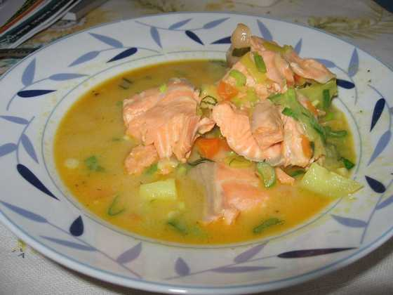
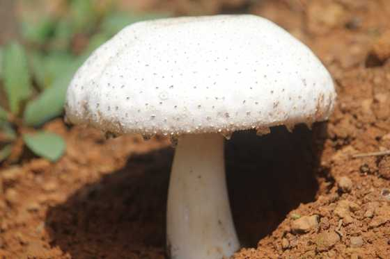
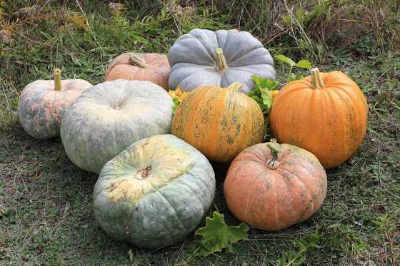
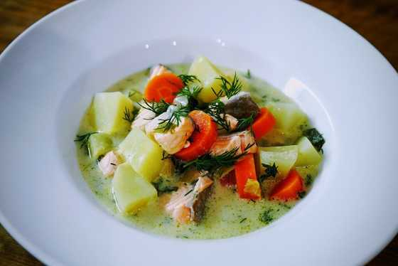
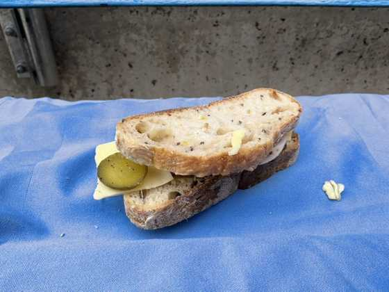
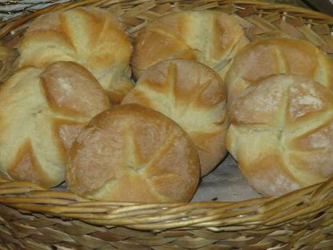
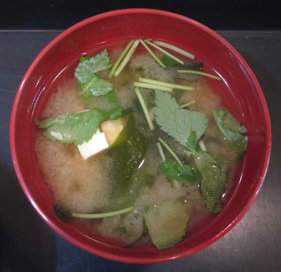
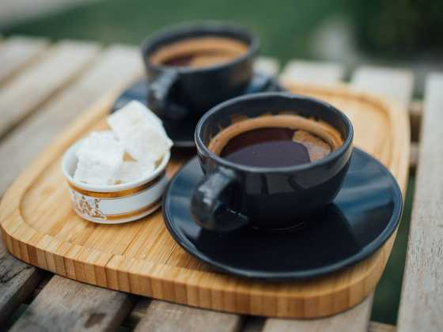
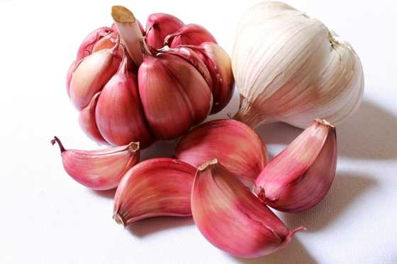
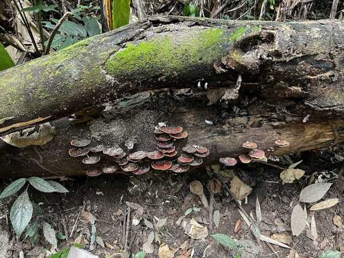

滋賀県米原市・スープが主役の小さなダイニング
ひと皿の主役は、
あたたかいスープ。
Un Ron diningは、スープを主役にしたダイニングです。湯気の立つ一杯から、その日がやさしく始まります。
お品書き
季節の野菜が、毎月ちがうスープになる。
紹介記事によると、看板は月替わりのスープです。10月は秋の味覚を使った「きのこのスープ」が紹介されていました。朝・昼・午後のカフェと、時間帯ごとに楽しめるお店として取り上げられています。
営業時間・定休日・価格・メニューの詳細は 準備中 です。最新の情報はInstagramをご覧ください。
写真はフリー素材のイメージです。お店で提供しているものそのものではありません。






口コミ
こんな声が聞こえてきそうな、一杯。
以下は制作側が作成した「イメージ例」であり、実在のお客様の声ではありません。
朝いちばんに飲むスープが、体の中からほっとさせてくれました。
月ごとにスープが変わるので、また来たくなります。
こぢんまりとして落ち着けて、ゆっくり食事ができました。
お店のこと
スープを主役にした、小さなダイニング。
Instagramのプロフィールでは「スープが主役の小さなダイニング」と紹介されています。紹介記事によると、お店は今年5月にオープンし、「エクシブ琵琶湖」などで経験を積んだシェフが手がけています。
お店の名前の意味や、オーナー・シェフの想いは、確認できた範囲では公表されていません。このページでは、確認できた事実を軸に、スープの湯気のようなあたたかさを制作側のイメージで表現しました。
情報源: 地球の歩き方(特派員ブログ) / Instagram @unron_dining
上記の事実以外(見出しの言い回し・配色など)は制作側の表現です。







アクセス
ご案内
| 所在地 | 滋賀県米原市梅ケ原1412-2 紹介記事では、JR米原駅東口から徒歩約15分とされています。 |
|---|---|
| 電話 | 準備中 |
| 営業時間 | 準備中 |
| 定休日 | 準備中 |
| SNS | Instagram @unron_dining |